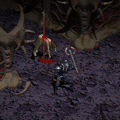
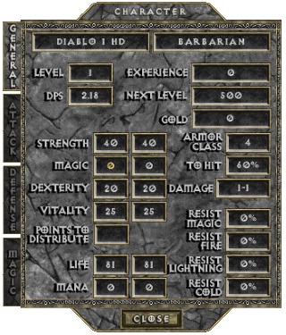
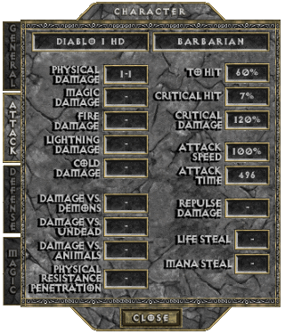
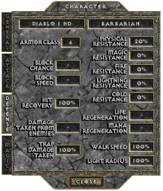
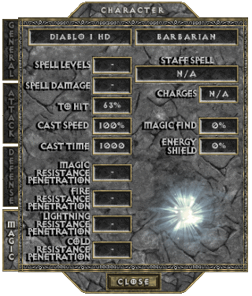
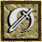
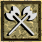
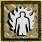

THE BARBARIAN
Since news of Diablo's emergence has spread, a small number of Barbarian warriors have begun roving the lands outside the Steppes, prepared for war and seeking information regarding the recent activities of the Prime Evils.
Steeped in mystery and tradition, these people refer to themselves as the "Children of Bul-Kathos," the great and ancient king. To better protect their lands from outside forces, they adopted a nomadic lifestyle, frequently moving within the confines of the Steppes and maintaining few permanent settlements. Isolating themselves from the world outside their territories, they eschew the use of magics and complex machinery, as they believe these things can only weaken their resolve developed over so many years.
The Children of Bul-Kathos have developed a kinship with the land and have learned to harness the primal energies within nature to enhance their own substantial physical prowess. It is because of this, together with their freedom from the trappings of the outside world, that the Western Kingdoms have historically referred to these tribes as "Barbarians," an epithet that belies the rich cultural and spiritual history these people truly possess. Although some trade with these curious bands of nomads, they do so only along the outermost borders of their lands. All intrusions into the territory surrounding Mount Arreat are forbidden, and warriors from the northern tribes are quick to thwart any incursions. Every foreign attempt at conquest has been met with fierce and decisive resistance.

BASE STATS
Per character level: 5 Attribute Points +2 Life +0.5% Elemental Resistances
+0.3 Physical Damage (only at levels 4 to 60, levels 1 to 3 make up 1-1 innate damage)
-0.2% Critical Hit Chance (only at levels 1 to 10, after 10 it stops decreasing)
-0.5% Critical Hit Damage (only at levels 1 to ???, after ??? it stops decreasing)
Physical Resistance drops from 20% to %6 at level 2, to %2 at level 3, to %0 at level 4
Per point in Strength: +0.18 Physical Damage +0.5% Critical Hit Damage
Per point in Dexterity: +0.18 Physical Damage +0.125% Critical Hit Chance (min 57 points) +0.5% To Hit (Weapon) +0.2 Armor Class
Per point in Vitality: +2.5 Life
Per point in Magic: +1 Mana (softpoints) +0.5% To Hit (Spell)
   
PREFERRED WEAPONS
text
See THIS PAGE for more information about the Attack Speed of Axes.
SKILLS
| Name | Icon | Info |
|---|---|---|
| RAGE (available from start) | Effect: Offensive buff that turns you berserk and increases attributes, but when it ends it makes you lethargic Strength: +3 (+3 per Character Level from level 2) Dexterity: +1.5 (+1.5 per Character Level from level 2) Vitality: +2 (+2 per Character Level from level 2) Rage/Lethargy Duration: 12 sec (each) Cooldown: 36 sec | |
| CLEAVE (from Character Level 8) |  | Effect: Slash attack that hits up to 3 targets, the one in front and two other from each adjacent side To Hit (Weapon): +12% (+1% per Character Level from level 11) Damage: +11% (+0.5% per Character Level from level 10) Synergy: Strength: Damage: +0.(1)% |
| FRENZY (from Character Level 16) |  | Effect: Stacking attack that with each hit adds damage and speed, but it also deducts defense and resistance Maximum Stacks: 4 Stack Duration: 5 sec (resets with each new Frenzy hit) Damage: +5 To Hit: +5% Overall Speed: +5% Armor Class: -2 All Resistances: -1% Synergy: Strength: Maximum Stacks: +1 (for each series of 20 points) |
| INNER FIRE (from Character Level 24) |  | Effect: Defensive and offensive buff that allows you to use all the Fire element's features for 24 sec Damage Taken from Enemies: -18 (+0.5 per Character Level from level 25) Fire Hit Damage: 3 - 13 (+??? per Character Level from level ) Attacker Takes 6 Fire Damage (+??? per Character Level from level ) Target Fire Resistance: -18% (+0.(72) per Character Level from level ) Cooldown: 2 min Synergy: Strength: Fire Hit Damage: +??? Attacker Takes Fire Damage: +0.1(6) Target Fire Resistance: -1% (for each series of 50 points) |
| MORTAL STRIKE (from Character Level 32) | Effect: Formidable attack with which you hit extremely hard, but has a significant negative impact on your defense To Hit: +30% (+5% per Character Level from level 34) Damage: +100% (+20% per Character Level from level 34) Armor Class: -3 x cLVL (for 3 sec) Cooldown: 6 sec | |